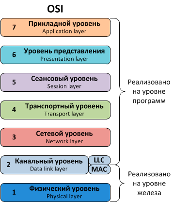
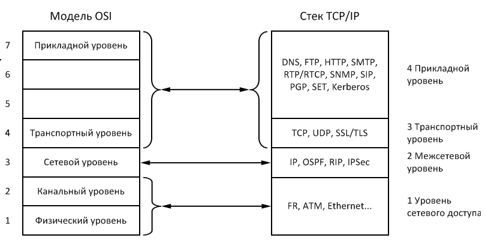

OSI - модель, которая обобщает и стандартизирует представление средств сетевого взаимодействия в телекоммуникационных и компьютерных системах, независимо от их внутреннего устройства и используемых технологий. Читается OSI, как "open systems interconnection basic reference model", что переводится как "базовая эталонная сетевая модель взаимодействия открытых систем".
Эта модель стала базовой для проектирования систем и даже сейчас она регулярно используется.
OSI состоит из двух частей: абстрактная модель сетевого взаимодействия и набор специализированных протоколов взаимодействия.
Первая часть представляет из себя семиуровневую модель:

Подробнее об каждом из уровней можно узнать в специализированной литературе или в Интернете.
Вторая часть содержит в себе протоколы для взаимодействия устройств как на одном уровне абстракции, так и на разных.
Эта модель появилась на свет благодаря DARPA - управлению перспективных исследовательских проектов Министерства обороны США, которые создали в 1969 году сеть ARPANET - прототип современного Интернета.
Название TCP/IP происходит из двух важнейших протоколов семейства — Transmission Control Protocol (TCP) и Internet Protocol (IP), на которых и работает Интернет.
Данная модель включает в себя четыре уровня:
